glyphTrader is a standalone, containerized, automated stock trading system built on the TFT V4/V7 strategy — a 100% technical analysis approach with zero AI or machine learning. It connects exclusively to Tradier for both trade execution and market data, runs entirely inside Docker containers on a single server, and provides a modern web interface for monitoring, configuration, and manual trade management.
The system evaluates 64 stocks across 20 sectors daily, scoring each with a composite technical indicator (the V4 Score), filtering candidates through a rigorous 7-step cascade, and placing bracket orders automatically. Positions are managed with ATR-based stops and targets, stepped stop ratchets, pyramiding rules, and time-based exits.
For traders who also hold positions outside the automated strategy, glyphTrader offers full manual trade management: discover, adopt, and manage orphan positions with configurable stop/target modes, ratcheting stops, and hold mode.
| Requirement | Minimum | Recommended |
|---|---|---|
| Docker | 20.10+ | Latest stable |
| Docker Compose | v2 | v2 (plugin) |
| RAM | 1 GB | 2 GB |
| Disk | 2 GB | 5 GB |
| Broker Account | Tradier (sandbox or production) | |
| OS | Linux (recommended), macOS, or Windows with WSL2 | |
On a fresh Linux server (Ubuntu 20.04+ or similar), the entire installation takes three commands:
git clone https://github.com/xochal/glyphTrader.git
cd glyphTrader
chmod +x setup.sh && ./setup.shThe setup script handles everything: Docker installation, configuration, container builds, and first-run initialization. You will be prompted to set an admin password during setup.
Save your recovery key immediately after setup. It is the only way to regain access if you forget your admin password. Store it in a password manager or secure offline location.
For macOS or Windows (with WSL2), install Docker Desktop first, then:
git clone https://github.com/xochal/glyphTrader.git
cd glyphTrader
cp .env.example .env
# Edit .env to set your desired ports if needed
docker compose build
docker compose up -dOn first startup, you will need to access the web interface and complete initial password setup.
Once the containers are running, open your browser and navigate to:
https://localhostCaddy generates a self-signed TLS certificate automatically. Your browser will display a certificate warning — this is expected and safe on your own server. Click through to proceed.
If you configured a custom domain, Caddy will automatically obtain a valid Let's Encrypt certificate and the browser warning will not appear.
The recovery key is displayed once during setup.sh execution. To use it later, send a POST
request to the recovery endpoint:
POST /api/auth/recover
Content-Type: application/json
{"recovery_key": "your-recovery-key-here", "new_password": "your-new-password"}This resets the admin password and re-encrypts all stored credentials with the new password's derived key.
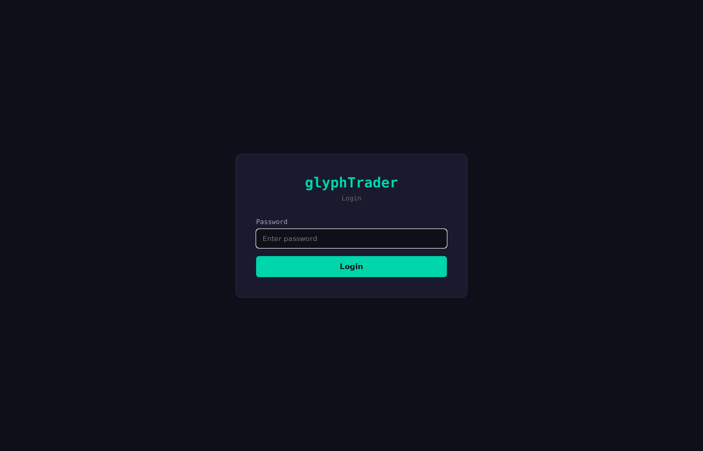
glyphTrader uses a single admin user model. There is one account, one password, and one active session at a time. Enter your admin password on the login page to access the system.
glyphTrader encrypts all sensitive data (Tradier API tokens, account numbers) using Fernet encryption with keys derived from your admin password via Argon2id. This means:
After a server reboot or container restart, you must log in at least once to unlock the encryption system. New trades will be blocked until the admin logs in.
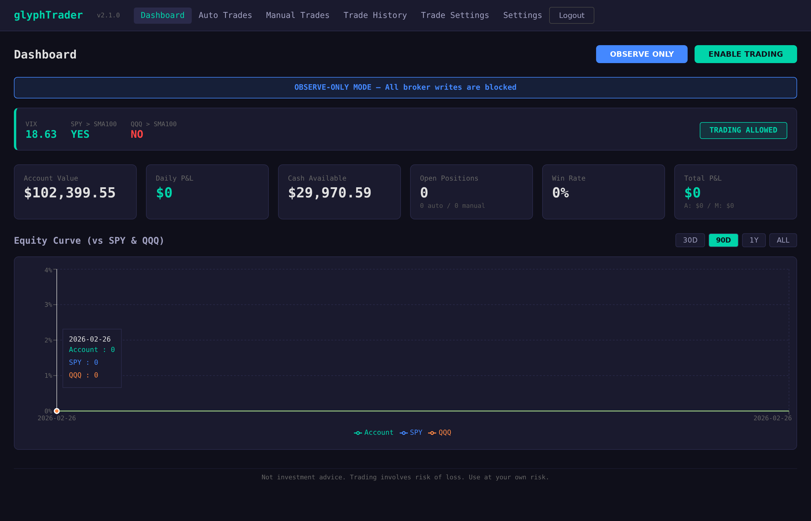
The Dashboard is your primary monitoring view. It displays the current market regime, portfolio performance, and provides critical safety controls.
The top navigation bar shows the application name, current page, and version number. When a newer version is available on the remote repository, an Update Available chip appears next to the version.
The blue Observe Only button toggles observe-only mode. When enabled, the system continues its full analysis cycle (data fetch, enrichment, scoring, plan generation) but does not place any orders. This is useful for monitoring the strategy's behavior before committing real capital. A password is required to toggle this mode in either direction.
The Enable Trading / Disable Trading button is the system's kill switch. When disabled, no new automated trades are placed and existing position management (stops, targets) continues. Enabling trading requires password confirmation to prevent accidental activation.
The Flatten All button is an emergency control that:
Flatten All is irreversible. It requires trading to be disabled (kill switch activated) and password confirmation. Use only in genuine emergencies.
The Regime panel displays the current market environment:
The regime filter is checked per stock against its assigned benchmark (SPY or QQQ). Entry is allowed if the stock’s benchmark is above its 100-day SMA, or VIX is below 20. If VIX is at or above 32, all new entries are blocked regardless of benchmarks.
| Stat | Description |
|---|---|
| Account Value | Total portfolio value from Tradier (including open positions) |
| Daily P&L | Today's profit or loss across all positions |
| Cash Available | Uninvested cash balance |
| Open Positions | Number of currently held positions (auto + manual) |
| Win Rate | Percentage of closed trades that were profitable |
| Total P&L | Cumulative profit/loss for all closed trades |
The equity curve chart plots your portfolio value over time alongside SPY and QQQ benchmarks (normalized to the same starting point). Time range toggles include: 30D (30 days), 90D (90 days), 1Y (1 year), and ALL (full history).
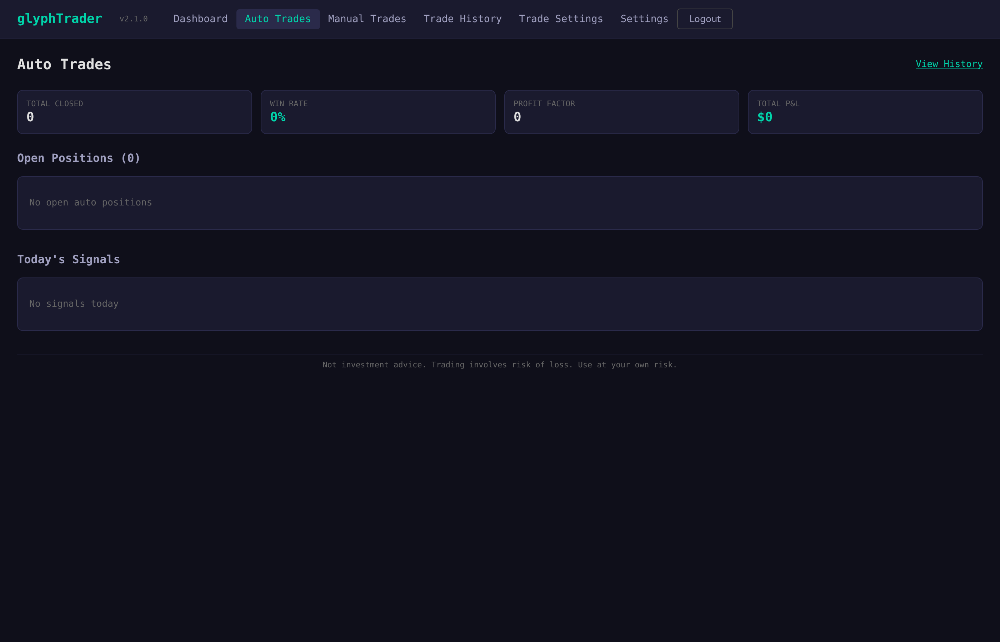
Each trading day, glyphTrader executes a fully automated cycle:
The Auto Trades page displays all positions initiated by the automated strategy. When the system is new or the market regime is unfavorable, this table may be empty.
| Column | Description |
|---|---|
| Symbol | Stock ticker |
| Shares | Current position size (may increase with pyramiding) |
| Entry | Average entry price (blended across tranches if pyramided) |
| Current | Latest market price |
| P&L | Unrealized profit/loss (dollar amount and percentage) |
| Stop | Current stop-loss price |
| T1 / T2 / T3 | Profit target prices |
| State | Current position state (see below) |
| Days | Trading days since entry |
| State | Meaning |
|---|---|
| ENTRY_PENDING | Bracket order submitted, awaiting fill |
| OPEN | Entry filled, all targets and stop active |
| T1_FILLED | First target hit, 70% sold, remaining position held |
| T2_FILLED | Second target hit, 20% more sold, 10% remaining |
| STOPPED | Stop loss triggered, position exited |
| CLOSED | All shares sold (targets, time stop, or manual close) |
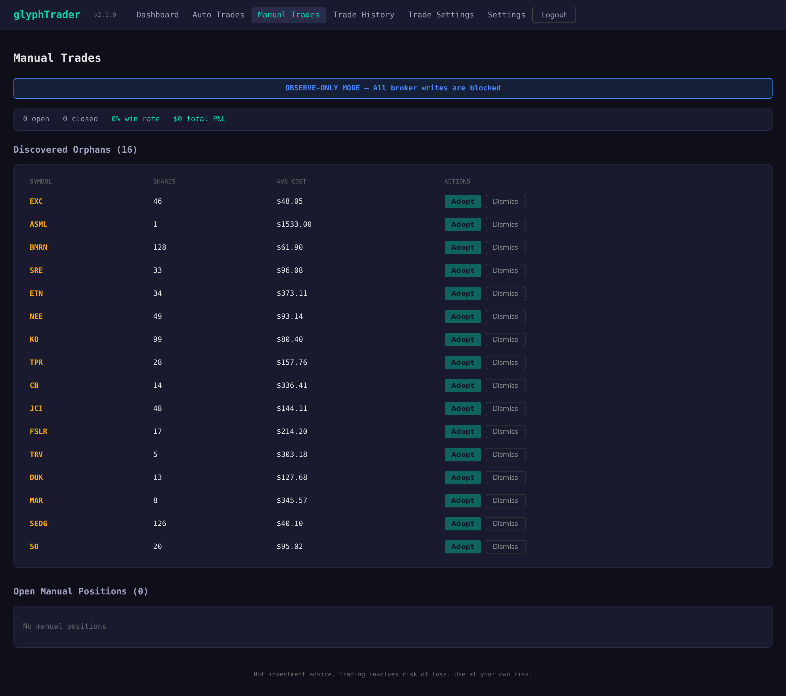
The Manual Trades page is designed for managing positions that exist on your Tradier account but were not initiated by glyphTrader's automated strategy. This includes positions you opened manually through Tradier's website or another platform.
Every 5 minutes during market hours, glyphTrader's reconciliation engine compares positions on your Tradier account against its internal database. Any positions not tracked by glyphTrader appear as orphans in the Discovered Orphans section.
For each orphan, you have two options:
When you click Adopt on an orphan or Edit on an existing manual position, the Trade Config Modal appears. This dialog lets you configure how the position is managed:
For ATR mode, this is the multiplier (e.g., 3.3). For Fixed mode, this is the dollar price (e.g., 145.50).
When enabled, the stop price ratchets upward as the stock price rises. The ratchet only moves up, never down, protecting accumulated gains.
How much of the position to sell at each target level. The default split is 70% at T1, 20% at T2, and 10% at T3 (must total 100%).
Once adopted, manual positions appear in the Open Manual Positions table with the same columns as auto trades plus additional action buttons:
| Action | Description |
|---|---|
| Edit | Reopen the Trade Config Modal to change stop/target settings |
| Hold / Targets | Toggle between Hold mode (stop-only, no targets) and Targets mode (normal T1/T2/T3 exits) |
| Close | Cancel all orders and market-sell the entire position immediately. Irreversible. |
| Release | Cancel glyphTrader's orders but keep the shares on Tradier. The position becomes untracked. |
Manual positions display mode badges indicating their current configuration:
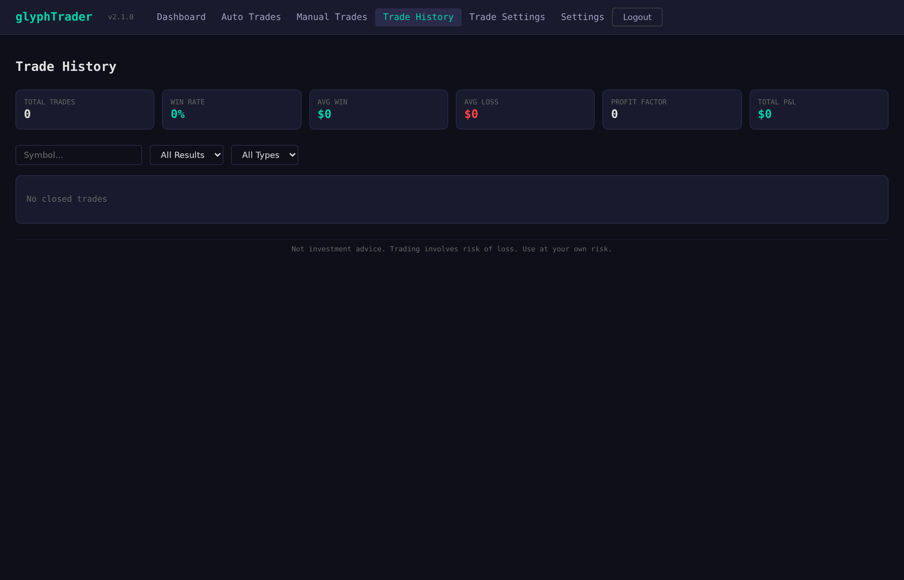
The Trade History page provides a comprehensive record of all closed trades with performance analytics.
| Metric | Description |
|---|---|
| Total Trades | Number of completed trades |
| Win Rate | Percentage of trades that closed profitably |
| Avg Win | Average profit on winning trades (dollars) |
| Avg Loss | Average loss on losing trades (dollars) |
| Profit Factor | Gross profits divided by gross losses (values above 1.0 indicate net profitability) |
| Total P&L | Cumulative profit/loss across all closed trades |
A color-coded grid showing monthly P&L by month (columns) and year (rows). Green cells indicate profitable months, red cells indicate losing months, with intensity reflecting the magnitude.
| Column | Description |
|---|---|
| Symbol | Stock ticker |
| Type Badge | A for automated, M for manual |
| Entry Price | Average entry price (blended if pyramided) |
| Entry / Exit Dates | When the position was opened and closed |
| P&L | Realized profit/loss with percentage |
| Hold Days | Number of trading days the position was held |
| Exit Reason | Why the trade closed (T1, T2, T3, STOPPED, TIME_STOP, MANUAL, etc.) |
| Pyramids | Number of add-on tranches (0, 1, or 2) |
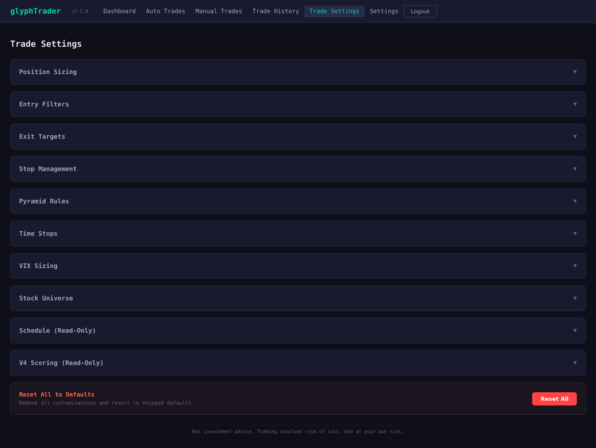
The Trade Settings page contains all configurable parameters for the trading strategy, organized into
collapsible accordion sections. Changes are saved to the database and take effect on the next trading cycle.
A Reset All to Defaults button at the bottom restores all parameters to their
trading_params.json defaults.
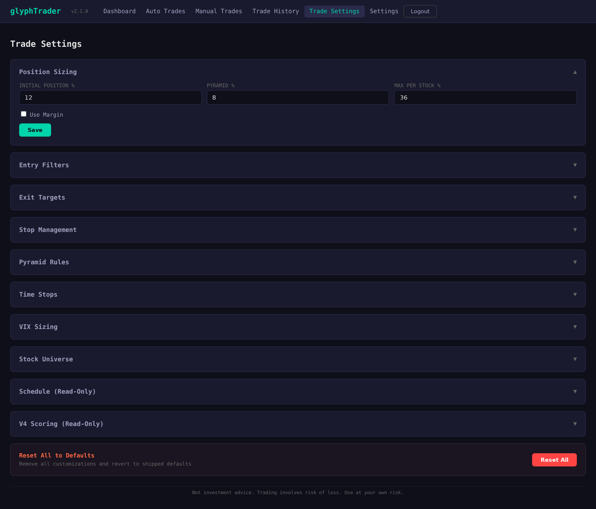
| Parameter | Default | Description |
|---|---|---|
| Initial Position % | 12.0% | Percentage of account value for the first tranche of a new position |
| Pyramid Position % | 8.0% | Percentage of account value for each pyramid add-on |
| Max Per Stock % | 36.0% | Maximum total allocation to a single stock (across all tranches) |
| Use Margin | Off | Whether to include margin buying power in position sizing calculations |
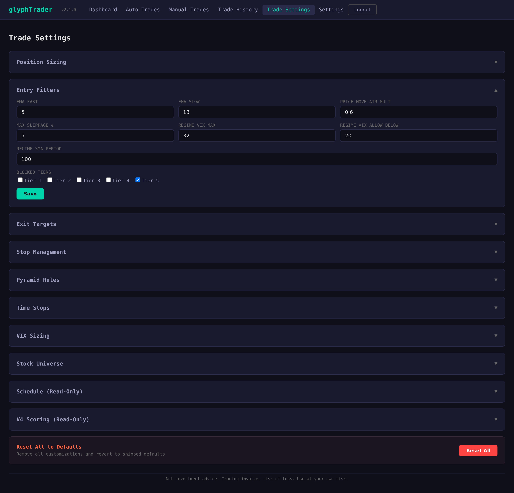
| Parameter | Default | Description |
|---|---|---|
| EMA Fast Period | 5 | Fast EMA period for crossover detection |
| EMA Slow Period | 13 | Slow EMA period for crossover detection |
| EMA Confirmation Mode | close_only | EMAs are calculated on close prices; entry requires EMA 5 > EMA 13 |
| Price Movement ATR Mult | 0.6 | Maximum overnight price change as a multiple of ATR |
| Max Slippage % | 5.0% | Maximum allowed gap between signal price and current price |
| Regime VIX Max | 32 | VIX level that blocks all new entries |
| Regime VIX Allow Below | 20 | VIX level below which regime is considered favorable |
| Regime SMA Period | 100 | SMA period for benchmark regime check |
| Blocked Tiers | [5] | Stock tiers that are blocked from entry |
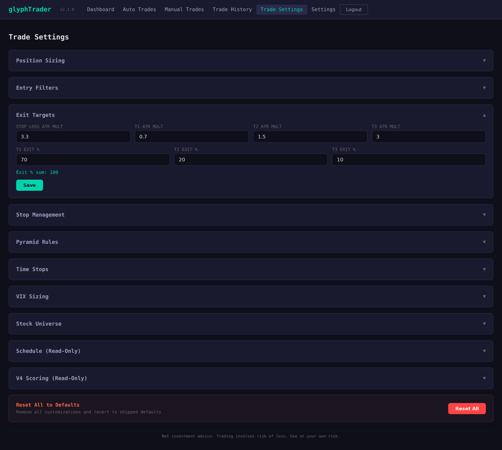
| Parameter | Default | Description |
|---|---|---|
| Stop Loss Multiplier | 3.3x ATR | Initial stop-loss distance below entry price |
| T1 Target Multiplier | 0.7x ATR | First profit target above entry (exit 70% of position) |
| T2 Target Multiplier | 1.5x ATR | Second profit target above entry (exit 20% of position) |
| T3 Target Multiplier | 3.0x ATR | Third profit target above entry (exit 10% of position) |
| T1 Exit % | 70% | Percentage of shares to sell at T1 |
| T2 Exit % | 20% | Percentage of shares to sell at T2 |
| T3 Exit % | 10% | Percentage of shares to sell at T3 |
Exit percentages must total 100%. The system validates this before saving.
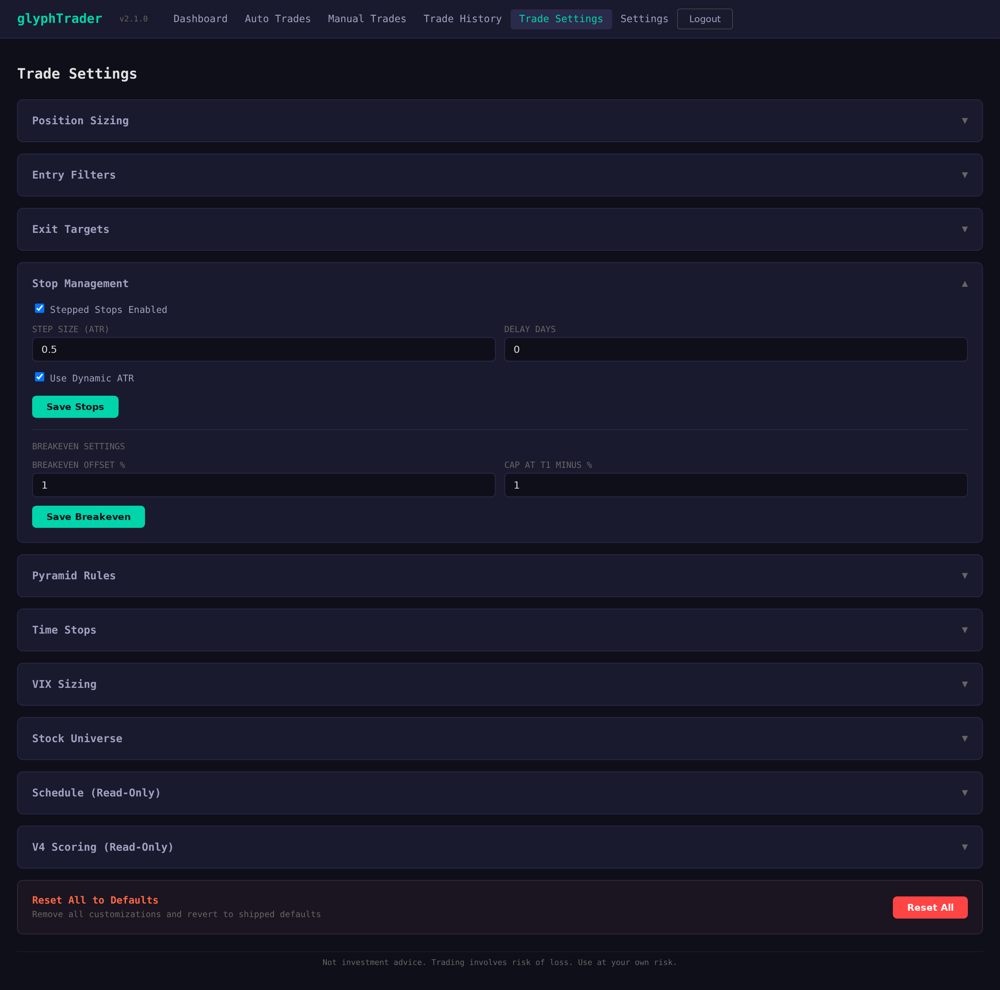
| Parameter | Default | Description |
|---|---|---|
| Enabled | On | Whether stepped stops are active |
| Step Size | 0.5 | ATR fraction to raise the stop per active day |
| Delay Days | 0 | Days after entry before stepping begins |
| Use Dynamic ATR | On | Recalculate ATR each day vs. using entry-day ATR |
| Parameter | Default | Description |
|---|---|---|
| Offset % | 1.0% | When T1 fills, stop is raised to entry price plus this percentage |
| Cap at T1 Minus % | 1.0% | Breakeven stop is capped at T1 price minus this percentage |
| Parameter | Default | Description |
|---|---|---|
| Max Pyramids Per Position | 2 | Maximum add-on tranches (total 3 tranches per position) |
| Min V4 Score for Pyramid | 75.0 | Stock must re-qualify with V4 score >= 75 for each add-on |
| Parameter | Default | Description |
|---|---|---|
| Hard Time Stop Days | 60 | Maximum calendar days to hold any position |
| Stagnant Win Days | 20 | Days after T1 fill before stagnant check applies |
| Stagnant Win Min Profit % | 5.0% | If profit is below this after stagnant days, exit remaining shares |
As VIX rises, position sizes automatically decrease. The brackets and multipliers are:
| VIX Range | Size Multiplier | Effect |
|---|---|---|
| VIX < 16 | 1.0x (100%) | Full position size |
| 16 ≤ VIX < 22 | 0.8x (80%) | Slightly reduced |
| 22 ≤ VIX < 28 | 0.6x (60%) | Moderately reduced |
| 28 ≤ VIX < 34 | 0.4x (40%) | Significantly reduced |
| VIX ≥ 34 | 0.2x (20%) | Minimal exposure |
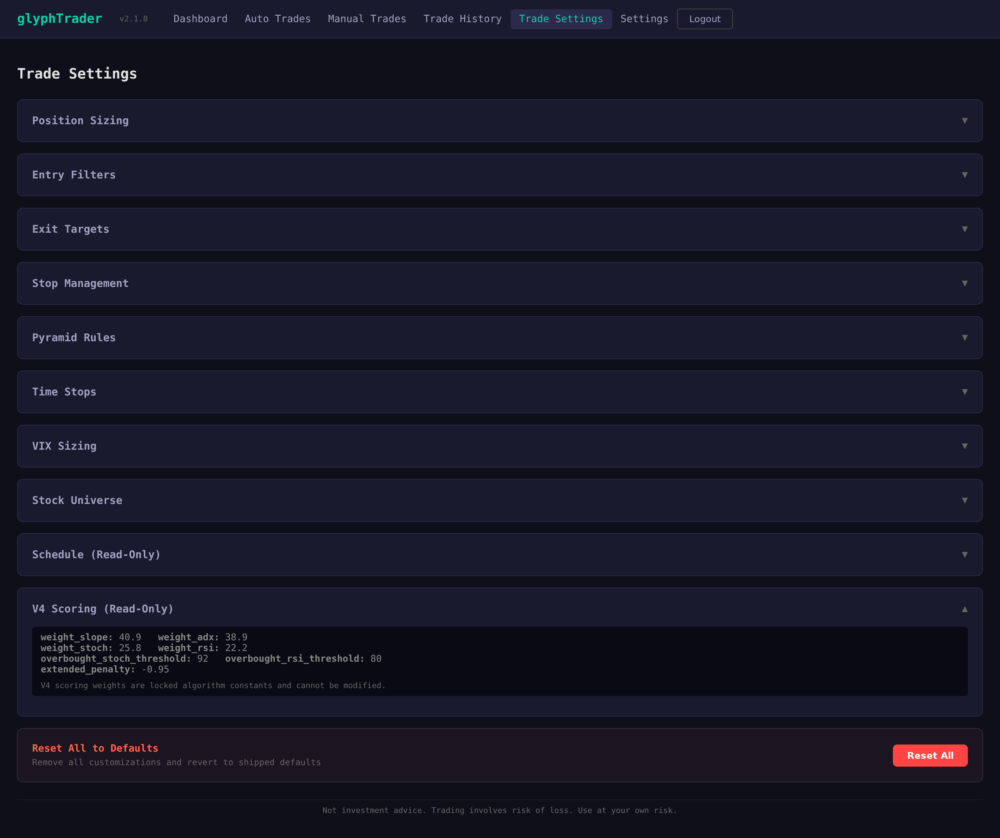
These are the locked algorithm constants used in V4 composite scoring. They are displayed for reference and cannot be modified through the interface:
| Weight | Value |
|---|---|
| Linear Regression Slope | 40.9 |
| ADX | 38.9 |
| Stochastic K | 25.8 |
| RSI | 22.2 |
| Overbought Stochastic Threshold | 92 |
| Overbought RSI Threshold | 80 |
| Extended Penalty | -0.953 |
The Schedule section displays all APScheduler jobs with their last run time and next scheduled run. This is read-only and includes: data fetch, enrichment, plan generation, execution, monitoring, reconciliation, and end-of-day snapshot jobs.
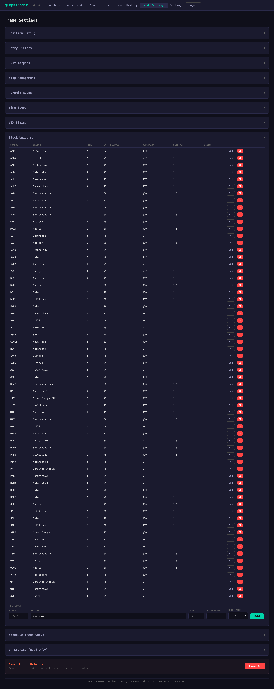
The full list of 64 stocks monitored by glyphTrader, organized by sector. Each stock has a tier
(1–5), a sector-specific V4 threshold, and a benchmark index (SPY or QQQ). The universe is
configurable via backend/config/watchlist.json but displayed as read-only in the UI.
| Sector | Symbols | Tier | V4 Threshold | Benchmark |
|---|---|---|---|---|
| Semiconductors | AMD, ASML, AVGO, KLAC, MRVL, NVDA, TSM | 1 | 68 | QQQ |
| Nuclear | BWXT, CCJ, DNN, SMR, UEC, UUUU | 1 | 75–80 | QQQ |
| Nuclear ETF | NLR | 1 | 80 | SPY |
| Cloud/SaaS | PANW | 1 | 75 | QQQ |
| Mega Tech | AAPL, AMZN, GOOGL, NFLX | 2 | 75–82 | QQQ |
| Solar | CSIQ, DQ, ENPH, FSLR, JKS, RUN, SEDG, SOL | 2 | 78 | QQQ |
| Healthcare | ABBV, LLY, VRTX | 2 | 75 | SPY/QQQ |
| Biotech | BMRN, INCY, IONS | 2 | 75 | QQQ |
| Technology | ACN, CSCO | 2 | 75 | SPY/QQQ |
| Utilities | DUK, EXC, NEE, SO, SRE | 2 | 68 | SPY |
| Clean Energy | LIT, STEM | 2 | 75 | SPY/QQQ |
| Industrials | ALLE, ETN, JCI, PWR, WTS | 3 | 75 | SPY |
| Insurance | ALL, CB, TRV | 3 | 75 | SPY |
| Materials | ALB, FCX, HCC, PICK, REMX | 3 | 75 | SPY |
| Energy | CVX, XLE | 3 | 75 | SPY |
| Consumer / Staples | CVNA, DKS, KO, MAR, PM, TPR, WMT | 4 | 75 | SPY |
Reset All to Defaults — At the bottom of the Trade Settings page, this button
restores all configurable parameters to their default values from trading_params.json.
Read-only sections (V4 Scoring, Schedule, Stock Universe) are unaffected.
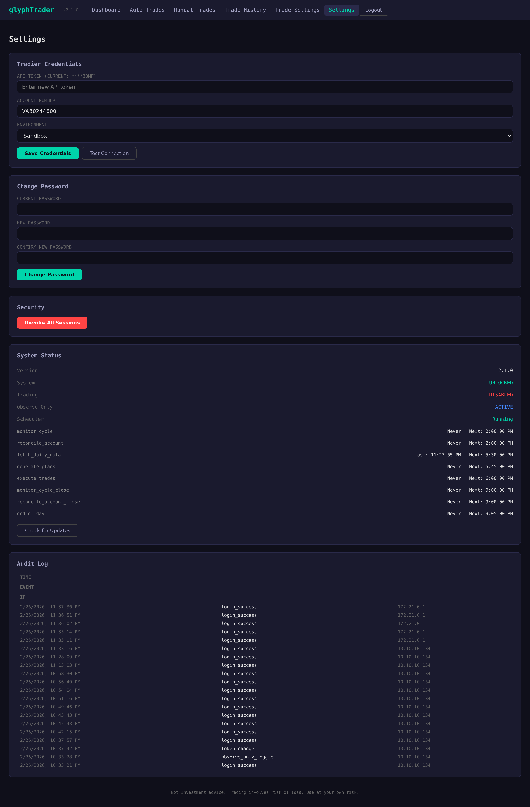
Enter your Tradier API credentials here. All values are encrypted with Fernet before storage in SQLite.
| Field | Description |
|---|---|
| API Token | Your Tradier access token (displayed masked after saving) |
| Account Number | Your Tradier brokerage account number |
| Environment | Sandbox (paper trading) or Production (real money) |
After entering credentials, click Save to store them, then Test Connection to verify they work. The test checks API authentication and account access.
Always start with the Sandbox environment to verify the system works correctly before switching to Production. Sandbox uses paper money and places no real trades.
glyphTrader ships in paper trading mode by default. The Production environment option in the credentials dropdown is disabled until a valid license key is activated. This is a safety measure to ensure that anyone running the system has explicitly acknowledged the risks of live trading.
GT-<base64-encoded-signature> (approximately 90 characters)GT-) into the input fieldClick Remove License on the Production License card. This clears the key and immediately forces the environment back to Sandbox. A confirmation dialog prevents accidental removal.
When glyphTrader starts up after an update, it compares the stored license version against the current software version. If they differ:
This is intentional — it ensures you re-review the liability waiver and obtain a fresh key for each version, since code changes may alter trading behavior.
Paper trade for 30 to 90 days before requesting a production license key. This gives you time to observe the system’s behavior, verify data freshness, and build confidence in its operation.
When the system is running without a valid production license (or with the environment set to Sandbox), an amber PAPER TRADING MODE banner appears at the top of every page. This banner is hidden only when a valid license is active and the environment is set to Production.
Change the admin password by entering the current password, the new password, and confirming it. Changing the password re-derives the Fernet encryption key and re-encrypts all stored credentials.
The Revoke All Sessions button invalidates all active JWT tokens, forcing a logout on every device. Use this if you suspect unauthorized access.
| Field | Description |
|---|---|
| Version | Current glyphTrader version |
| Lock State | Locked (credentials encrypted, no trading) or Unlocked (ready to trade) |
| Trading Enabled | Whether the kill switch is on or off |
| Observe Only | Whether observe-only mode is active |
| Scheduler Status | Details for each scheduled job: last run time, next run time, state |
Compares your local git repository against the remote. If updates are available, it shows the number
of commits behind and a summary of changes. Use update.sh to apply updates (see Chapter 11).
A chronological log of security-relevant events:
glyphTrader implements the TFT V4/V7 strategy, a 100% technical analysis approach with zero AI or machine learning. The strategy was developed and backtested over 6+ years before being ported to this automated system.
The core of the strategy is the V4 Composite Score — a weighted blend of six technical indicators that produces a single score (0–100) measuring the quality of a stock's current technical setup.
| Indicator | Weight | What It Measures |
|---|---|---|
| Linear Regression Slope | 40.9 | Trend direction and strength over the regression window |
| ADX (Average Directional Index) | 38.9 | Trend strength (directional movement) |
| Stochastic K | 25.8 | Momentum oscillator showing current price relative to range |
| RSI (Relative Strength Index) | 22.2 | Momentum measuring speed and magnitude of price changes |
Different sectors require different V4 scores to trigger an entry. Higher thresholds are applied to more volatile or crowded sectors:
| Threshold | Sectors |
|---|---|
| 68 | Semiconductors, Utilities |
| 75 | Nuclear (SMR), Healthcare, Biotech, Technology, Cloud/SaaS, Clean Energy, Industrials, Insurance, Materials, Energy, Consumer, Consumer Staples, Mega Tech (NFLX) |
| 78 | Solar |
| 80 | Nuclear (BWXT, CCJ, DNN, NLR, UEC, UUUU) |
| 82 | Mega Tech (AAPL, AMZN, GOOGL) |
The automated trading cycle runs on a fixed schedule every trading day (market holidays excluded):
Every potential entry must pass all seven filters in this exact order. If a stock fails any filter, it is rejected and the remaining filters are not evaluated:
close_only confirmation (EMAs are calculated on closing prices).
Every entry is placed as an OTOCO (One-Triggers-OCO) bracket order on Tradier:
When the primary order fills, the protective orders activate automatically.
All stops and targets are calculated relative to the 14-period ATR (Average True Range) at the time of entry, using a 70/20/10 exit split:
| Level | Distance | Exit % | Example (Entry $100, ATR $2.00) |
|---|---|---|---|
| Stop | 3.3x ATR below | 100% (remaining) | $93.40 |
| T1 | 0.7x ATR above | 70% | $101.40 |
| T2 | 1.5x ATR above | 20% | $103.00 |
| T3 | 3.0x ATR above | 10% | $106.00 |
If a stock continues to score well after entry, up to 2 pyramid adds (3 total tranches) are allowed, each requiring:
On each pyramid add, all stops and targets are reset to the new blended average entry price. This ensures risk management reflects the actual cost basis, not the original entry.
Each trading day, the stop-loss price is ratcheted upward by a calculated step:
new_stop = base_stop + (active_days x 0.5 x ATR)The stepped stop is capped at the breakeven level before T1 fills, preventing the stop from rising above the entry price prematurely. After T1 fills, the stop continues stepping upward without a cap.
When T1 fills (the first profit target is hit), the base stop is raised to entry price + 1.0%, locking in a small profit on the remaining shares. This breakeven stop is capped at T1 price minus 1.0% to prevent the stop from sitting too close to the fill zone. When T2 subsequently fills, the stop is pulled up further to the T1 price level, protecting the bulk of the gains.
After the position reaches maximum size (all pyramid slots used), the stop becomes a trailing ratchet that only moves up, never down. This locks in progressively higher profits as the stock advances.
glyphTrader never trades on stale data. Six independent safety layers prevent this:
| Layer | Check | Description |
|---|---|---|
| 1 | Fetch Threshold | Enrichment aborts if fewer than 75% of stocks were fetched successfully, or if benchmark data (SPY/QQQ) is missing |
| 2 | DataStore Clearing | Old in-memory data is wiped before each enrichment cycle, preventing stale symbol data from persisting |
| 3 | Global Freshness | Plan generation checks that the DataStore was updated today before generating any entry plans |
| 4 | VIX Staleness | VIX data must be no more than 4 calendar days old (covers weekends plus one holiday) |
| 5 | Per-Symbol Staleness | Each stock and benchmark is individually verified for current data before use |
| 6 | NaN Guards | V4_SCORE, SMA_100, and ATR_14 are explicitly checked for NaN before any calculation or trade decision |
| Container | Technology | Purpose |
|---|---|---|
| Reverse Proxy | Caddy | Automatic HTTPS, security headers, request routing |
| Backend | FastAPI + APScheduler | API server, trading logic, scheduled jobs |
| Frontend | React + nginx | Web interface (6 pages) |
| Database | SQLite (WAL mode) | Persistent storage on mounted volume |
--workers 1): Required because Fernet key cache is per-process./update.shThe update script performs the following steps automatically:
git pull
docker compose build
docker compose up -dYour data survives updates because:
./data:/app/dbdata) outside the container filesystemUpdating never deletes your trade history, positions, settings, or credentials. The SQLite database persists across all updates and container rebuilds.
After an update, your production license key is automatically invalidated and the environment reverts to Sandbox. You must obtain a new license key for the updated version before switching back to Production. This is a safety measure — code changes may affect trading behavior, so each version requires explicit re-acknowledgment of the risks.
| Symptom | Cause | Solution |
|---|---|---|
| "System is locked" | Containers restarted and the encryption key is not in memory | Log in with your admin password to unlock the encryption system |
| Browser certificate warning | Self-signed TLS certificate (expected behavior) | Click through the warning to proceed. For custom domains, Caddy obtains valid Let's Encrypt certificates automatically. |
| No data on dashboard | Data fetch has not run yet today | Data fetch runs at 12:30 PM ET. Before that time, dashboard shows previous day's data. Alternatively, restart containers to trigger a startup data load. |
| "Session expired" | 10 minutes of inactivity | Log in again. This is a security feature. |
| Orphans not showing | Reconciliation cycle has not run yet | Reconciliation runs every 5 minutes during market hours. Wait for the next cycle, or restart containers. |
| Forgot admin password | N/A | Use your recovery key with POST /api/auth/recover to reset the password |
| Lost recovery key | N/A | There is no other way to recover access. You must delete the database and re-run setup. |
| Trades not executing | Multiple possible causes | Check: (1) System is unlocked, (2) Trading is enabled (kill switch), (3) Observe-only is OFF, (4) Tradier credentials are valid, (5) Market regime allows entries |
| Container won't start | Port conflict or Docker issue | Check ports 80/443 are free: ss -tlnp | grep -E ':80|:443'. Verify Docker is running: docker info |
| Production dropdown disabled | No valid production license | Activate a license key in Settings → Production License. Keys are version-locked; after an update, request a new key from the project maintainer. |
| License cleared after update | Version changed | This is expected behavior. License keys are tied to a specific version. Contact the project maintainer to obtain a new key for the updated version. |
| VIX data stale | yfinance download failed | Check internet connectivity. VIX staleness is allowed up to 4 calendar days (covers weekends + 1 holiday). If beyond that, Tradier VIX quote is used as fallback. |
Check container logs for detailed error information:
docker compose logs backend --tail=100
docker compose logs caddy --tail=50
docker compose logs frontend --tail=50| Action | Location | Requirements |
|---|---|---|
| Kill Switch (disable all trading) | Dashboard → Enable/Disable Trading button | Password required to enable |
| Observe-Only Mode | Dashboard → Observe Only button | Password required both directions |
| Flatten All Positions | Dashboard → Flatten All button | Kill switch must be ON + password |
| Emergency Docker Stop | Server command line | sudo systemctl stop docker |
| Revoke All Sessions | Settings → Security section | Must be logged in |
| Category | Parameter | Value |
|---|---|---|
| Position Sizing | Initial / Pyramid / Max | 12% / 8% / 36% |
| Stop Loss | ATR Multiplier | 3.3x |
| T1 Target | ATR Mult / Exit % | 0.7x / 70% |
| T2 Target | ATR Mult / Exit % | 1.5x / 20% |
| T3 Target | ATR Mult / Exit % | 3.0x / 10% |
| Stepped Stop | Daily Step | 0.5x ATR per day |
| Breakeven | Trigger / Cap | +1.0% / T1 - 1.0% |
| EMA Crossover | Fast / Slow | 5 / 13 |
| Price Movement | Max Overnight Gap | 0.6x ATR |
| Slippage | Max Gap | 5.0% |
| Regime | VIX Block / Allow | ≥32 block / <20 allow |
| Pyramid | Max / Min Score | 2 adds / V4 ≥ 75 |
| Time Stop | Hard / Stagnant | 60 days / 20 days <5% |
| Time | Job |
|---|---|
| 12:30 PM | Data fetch + enrichment (Tradier + yfinance VIX, indicators, V4 scoring) |
| 12:45 PM | Plan generation (7-filter cascade) |
| 1:00 PM | Trade execution (bracket orders) |
| Every 2 min | Monitor cycle (fills, stops, targets) |
| Every 5 min | Reconciliation (ghosts, orphans, quantities) |
| 4:05 PM | End-of-day snapshot |
| File | Purpose |
|---|---|
setup.sh | First-time installation script |
update.sh | Update script (pull, build, restart) |
docker-compose.yml | Container orchestration |
.env | Port configuration (gitignored) |
backend/config/trading_params.json | Default trading parameters |
backend/config/watchlist.json | Stock universe (64 stocks + benchmarks) |
data/glyphtrader.db | SQLite database (bind-mounted volume) |
glyphTrader was designed by Russell Shipe and co-developed with Claude, Anthropic's AI assistant, using Claude Code (Anthropic's CLI for Claude).
The project followed a rigorous design-first approach: the complete BUILD_PLAN.md specification (1,100+ lines) went through four rounds of design review before a single line of code was written. A separate REVIEW_FINDINGS.md documented known pitfalls and bugs to avoid during implementation.
| Phase | Name | Description |
|---|---|---|
| 1 | Scaffold | Docker, Caddy, FastAPI, SQLite, JWT auth, setup.sh |
| 2 | Data Pipeline | Tradier client, yfinance VIX, technical indicators, V4 scoring, DataStore |
| 3 | Signal Engine | 7-filter cascade in exact order, plan generation, entry logic |
| 4 | Position Management | Bracket orders, target exits, stepped stops, pyramiding, time stops |
| 5 | Frontend | React: Dashboard, Auto Trades, Trade History, Trade Settings, Settings |
| 6 | Hardening | Error handling, logging, scheduler, deployment scripts, security audit |
| 7 | Manual Trades | Manual Trades page, reconciliation, orphan adoption, configurable stops/targets, ratchets, hold mode, flatten all |
setup.sh, portable across any Linux serverThe TFT V4/V7 strategy was ported from a production trading system with over 6 years of backtested data. The V4 scoring weights, filter cascade order, and position management rules were preserved exactly as designed, with no re-optimization or curve fitting during the port.
The codebase was hardened through multiple comprehensive audits: